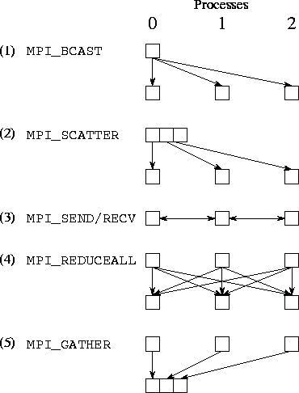

![[DBPP]](pictures//asm_color_tiny.gif)


![[Search]](pictures//search_motif.gif)
As explained in Chapter 2, parallel algorithms often call for coordinated communication operations involving multiple processes. For example, all processes may need to cooperate to transpose a distributed matrix or to sum a set of numbers distributed one per process. Clearly, these global operations can be implemented by a programmer using the send and receive functions introduced in Section 8.2. For convenience, and to permit optimized implementations, MPI also provides a suite of specialized collective communication functions that perform commonly used operations of this type. These functions include the following.
These operations are summarized in Figure 8.2. All are executed collectively, meaning that each process in a process group calls the communication routine with the same parameters.
Figure 8.2: MPI global communication functions.
MPI_BARRIER is used to synchronize execution of a group of processes. No process returns from this function until all processes have called it. A barrier is a simple way of separating two phases of a computation to ensure that messages generated in the two phases do not intermingle. For example, a call to MPI_BARRIER could be inserted before the second send operation in Program 8.4 to ensure deterministic execution. Of course, in this example as in many others, the need for an explicit barrier can be avoided by the appropriate use of tags, source specifiers, and/or contexts.
MPI_BCAST, MPI_GATHER, and MPI_SCATTER are collective data movement routines, in which all processes interact with a distinguished root process to broadcast, gather, or scatter data, respectively. The operation of these functions is illustrated in Figure 8.3. In each case, the first three arguments specify the location ( inbuf) and type ( intype) of the data to be communicated and the number of elements to be sent to each destination ( incnt). Other arguments specify the location and type of the result ( outbuf, outtype) and the number of elements to be received from each source ( outcnt).
Figure 8.3: MPI collective data movement functions, illustrated for a
group of 4 processes. In each set of 16 boxes, each row represents
data locations in a different process. Thus, in the one-to-all
broadcast, the data A is initially located just in process
0; after the call, it is replicated in all processes. In each case,
both incnt and outcnt are 1, meaning that each message
comprises a single data element.
MPI_BCAST implements a one-to-all broadcast operation whereby a single named process ( root) sends the same data to all other processes; each process receives this data from the root process. At the time of call, the data are located in inbuf in process root and consists of incnt data items of a specified intype. After the call, the data are replicated in inbuf in all processes. As inbuf is used for input at the root and for output in other processes, it has type INOUT.
MPI_GATHER implements an all-to-one gather operation. All processes (including the root process) send data located in inbuf to root. This process places the data in contiguous nonoverlapping locations in outbuf, with the data from process i preceding that from process i+1 . Hence, the outbuf in the root process must be P times larger than inbuf, where P is the number of processes participating in the operation. The outbuf in processes other than the root is ignored.
MPI_SCATTER implements a one-to-all scatter operation; it is the reverse of MPI_GATHER. A specified root process sends data to all processes, sending the i th portion of its inbuf to process i ; each process receives data from root in outbuf. Hence, the inbuf in the root process must be P times larger than outbuf. Notice the subtle difference between this function and MPI_BCAST: while in MPI_BCAST every process receives the same value from the root process, in MPI_SCATTER every process receives a different value.
The functions MPI_REDUCE and MPI_ALLREDUCE implement reduction operations. They combine the values provided in the input buffer of each process, using a specified operation op, and return the combined value either to the output buffer of the single root process (in the case of MPI_REDUCE) or to the output buffer of all processes ( MPI_ALLREDUCE). The operation is applied pointwise to each of the count values provided by each process. All operations return count values with the same datatype as the operands. Valid operations include maximum and minimum ( MPI_MAX and MPI_MIN); sum and product ( MPI_SUM and MPI_PROD); logical and, or, and exclusive or ( MPI_LAND, MPI_LOR, and MPI_LXOR); and bitwise and, or, and exclusive or ( MPI_BAND, MPI_BOR, and MPI_BXOR).
Figure: Applications of MPI_REDUCE and MPI_ALLREDUCE.
The first line shows the send buffers (of size 2) in each of four
processes; subsequent lines show the output buffers in each process
following four different global communication
calls.
As an example, the following call would be used to compute the minimum of two sets of P values, where P is the number of processes involved in the reduction.
MPI_REDUCE(inbuf, outbuf, 2, MPI_INT, MPI_MIN, 0, MPI_COMM_WORLD)
After the reduction, outbuf[0] in process 0 contains the minimum of the first element in each input buffer ( min(inbuf[0])); similarly, outbuf[1] contains min(inbuf[1]). The operation of this and other calls to MPI reduction functions are illustrated in Figure 8.4.
 . Finite Difference:
. Finite Difference:
Once again we consider a finite difference problem, this time to illustrate the use of global operations. The algorithm considered requires both nearest-neighbor communication (to exchange boundary values) and global communication (to detect termination). Similar problems have previously been discussed in Chapter 2. The MPI implementation given in Program 8.5 is for a one-dimensional decomposition of a one-dimensional problem in which each process has two neighbors. It uses MPI_SEND and MPI_RECV for nearest-neighbor communication and four MPI global communication routines, for a total of five distinct communication operations. These are summarized as follows and are illustrated in Figure 8.5:

Figure 8.5: Communication performed in the finite difference program,
assuming three processes. Each column represents a processor; each
subfigure shows data movement in a single phase. The five phases
illustrated are (1) broadcast, (2) scatter, (3) nearest-neighbor
exchange, (4) reduction, and (5) gather.
The use of scatter and gather operations to transfer input and output data is particularly simple and convenient. Note, however, that their use in this example is inherently nonscalable. As we solve larger problems, storage limitations will eventually prevent us from accumulating all input and output data in a single process. In addition, the associated communication costs may be prohibitive.
© Copyright 1995 by Ian Foster